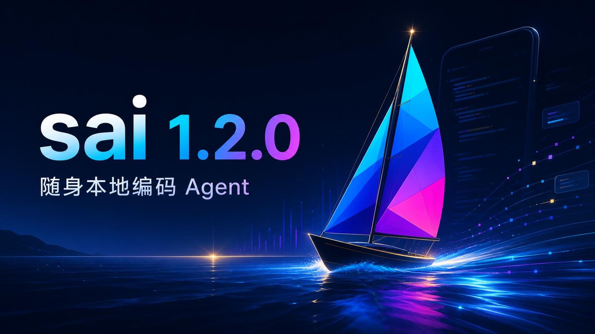

一句话发起任务，过程仍然可见、可停、可撤回。
Agent 可以创建多文件项目、修改代码、运行测试、检查 Diff、建立 Git 检查点，并在后台继续工作。工具状态会折叠成移动端友好的摘要，而不是占满整个屏幕。
描述目标→调用工具→运行验证→审核变更
MOBILE LOCAL CODING AGENT · POWERED BY DEEPSEEK HARNESS
sai 是为 Android 重新设计的本地编码 Agent。模型负责推理，手机本地负责项目文件、Git、终端、Debian 工具链、浏览器操作与审批；会话、工具编排和上下文由官方 DeepSeek Harness 驱动。

它把模型推理与本地执行分开：你配置自己的模型 API，sai 在设备内管理代码、运行命令、保存会话、审核修改并组织扩展。适合移动办公、轻量开发、远程排障和随时继续电脑上的项目。
Agent 可以创建多文件项目、修改代码、运行测试、检查 Diff、建立 Git 检查点，并在后台继续工作。工具状态会折叠成移动端友好的摘要，而不是占满整个屏幕。
快速制作网页、Python 服务、脚本、文档或小型原型；也可以进入已有 Git 项目定位问题。
项目、终端输出、会话事件和工具执行都在手机。模型 API 只接收完成当前推理所需的上下文。
每个会话固定自己的提供商、模型、推理档位与辅助视觉路线，不会切换会话后悄悄改变。
Windows 端通过局域网扫码配对，浏览项目、编辑文件并跟随基础会话流，无需上传项目到 sai 云端。
sai 1.2.0 以官方 DeepSeek Harness 作为唯一活动 Agent 引擎。Compose 管设备能力与安全边界，DSH 管会话、模型流、工具编排、Steer、上下文压缩和追加式事件。
sai 应用及第一方插件使用 GPLv3；DeepSeek Harness 保留其 MIT 许可证、版权与第三方声明。sai 对 DSH 做移动端集成与界面适配，不冒充其官方 Android 客户端。
功能不是孤立按钮，而是围绕“理解项目—修改—执行—验证—审核—继续”的完整任务链组合。
层级资源管理器、项目 ZIP 导入、代码编辑、搜索替换、Diff、分支、检查点、消息级撤回和项目删除。
内置基础 Debian、Git 与 Node/DSH 运行时；Python、Node.js、Rust、Go、Java、C/C++、LaTeX 等按需安装。
兼容 OpenAI、Anthropic、Gemini、DeepSeek、阿里云及兼容协议，模型与推理配置绑定到会话。
浏览器不是给用户浏览网页的普通入口，而是 Agent 可观察、点击、输入、提交、截图和下载的受控工具。
可卸载 Voice Pack 提供中英流式识别；纯文本模型可通过用户选择的视觉模型获得结构化图片观察。
读取、工作区写入和完全访问三档权限；危险删除、包安装、外部修改与不可撤回副作用需要明确提示。
sai 将 Android 工具、UI、模型适配、语音、视觉、市场、宠物和产物渲染拆成 DSH 插件。MCP 与 Skills 市场继续保留，第三方 DSH 插件来自人工维护的 awesome-dsh-plugin 目录，并在手机本地做兼容性预检。
查看源码与插件结构 →“正式版”表示发行、升级和核心任务链达到可用基线，不表示移动设备突然拥有服务器级隔离与无限资源。
它提供 Linux 兼容性，但不能提供 Docker、cgroup、内核隔离或真正 root。不要执行来源不明的仓库与脚本。
sai 已稳定封装固定版本并提供回滚，但 DeepSeek Harness 本身仍是快速发展的开发者预览项目，升级需通过兼容矩阵。
内存、温度、电量和存储会限制大型 Rust/C++/Java 构建。它适合移动开发与验证，不替代高性能工作站。
APK 不以 Google Play 为首发渠道。系统安装确认、权限对话框、生物识别和支付验证都必须由用户完成。
MCP、Skills、插件、网页与模型输出都属于不可信输入。安装前检查许可证、权限与源码仍然必要。
当前局域网加密连接已可用；桌面重启后的持久身份、自动发现与无感重连仍是后续重点。
移动热修、小型原型、Python/Web 项目、代码审查、测试验证、远程排障、在外继续已有任务。
运行不可信恶意代码、Docker 工作负载、内核开发、超大型本地编译、要求无人值守绕过系统安全确认的自动化。
未来扩展优先考虑可验证收益、安全风险和手机资源，而不是盲目增加入口。
按项目提供符号、引用、诊断、重命名；提交前扫描密钥、依赖漏洞和危险配置，并把测试证据作为完成门槛。
导出不含密钥的完整任务证据；把 issue、分支、测试和草稿 PR 串联；长期记忆保留来源、时间与可撤销状态。
依据能力、延迟、费用和任务风险选择模型；提供可见计划任务；端到端加密同步设置、摘要与复现包。
所有产物由 GitHub Actions 构建并附带 SHA-256、SBOM 与许可证。手机端可自行检查、下载、校验并升级，后续无需反复连接 USB。
不会。sai 没有项目云端中继；工作区、Debian、会话和工具状态默认保留在设备。模型请求、用户启用的 Web 工具、远程 MCP、软件包下载和 Git 远程操作会访问相应服务。
不可以。sai 使用用户配置的 API Key 或兼容服务端点，不接入消费订阅登录，也不会代管模型额度。
离线中英语音模型约 253 MB。独立模块让不使用语音的用户保持更小的安装体积，也可以随时卸载而不影响文字 Agent。
只有在用户手动启用无障碍服务并对当前任务授权后，Agent 才能请求受限设备动作；密码框、支付、生物识别、系统安全窗口与 Android 权限确认不可绕过。